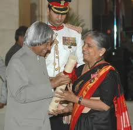
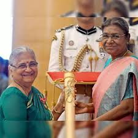
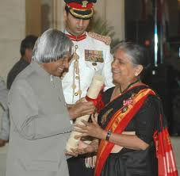
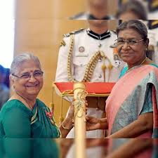
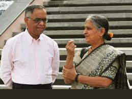
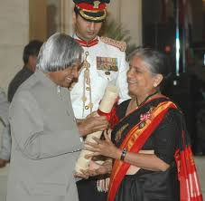
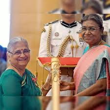

Gallery
Here are some memorable moments from the lives of Sudha and Narayana Murthy.
Sudha Murthy
 



Narayana Murthy
Together

This website is a simple tribute to two of India’s most inspiring personalities — Sudha Murthy, an author, educator, and philanthropist, and her husband Narayana Murthy, the co-founder of Infosys and a pioneer in India's IT revolution.
Their journey together is a story of hard work, humility, and deep commitment to social and ethical values. Learn more about their lives, contributions, and legacy below.
Sudha Murthy is an Indian author, social worker, and the former chairperson of the Infosys Foundation. Born on August 19, 1950, in Shiggaon, Karnataka, she holds degrees in Electrical Engineering and Computer Science. She was the first female engineer to be hired at TATA Engineering and Locomotive Company (TELCO).
As a writer, she is known for her simple and relatable stories that often reflect Indian culture, values, and social issues. Her works have been published in English and many Indian languages, touching the lives of millions of readers.
Through the Infosys Foundation, she has supported thousands of projects in education, healthcare, rural development, and the arts across India. Sudha Murthy is also known for her humility, generosity, and strong sense of ethics.
N. R. Narayana Murthy is a renowned Indian businessman and the founder of Infosys, one of India's largest and most respected IT services companies. Born on August 20, 1946, in Mysore, Karnataka, he graduated in Electrical Engineering from the University of Mysore and later completed his master's from IIT Kanpur.
In 1981, with a small team and a loan of ₹10,000 from his wife Sudha, Narayana Murthy co-founded Infosys. Under his leadership, the company grew into a global IT giant and helped put India on the world technology map.
Murthy is widely admired for his ethical leadership, emphasis on corporate governance, and contribution to India’s IT revolution. He has received numerous awards and honors, including the Padma Vibhushan, India's second-highest civilian award.
Sudha and Narayana Murthy met during their early careers and got married in 1978. Their relationship is one of mutual respect and shared values, especially their belief in simplicity, education, and service to society.
Sudha Murthy once gave Narayana Murthy ₹10,000 to help him start Infosys, a decision that later helped change the face of the Indian IT industry. Despite their success, both have remained grounded and continue to live modestly.
They have two children, including Akshata Murty, who is married to Rishi Sunak, the Prime Minister of the United Kingdom.
"Vision without action is merely a dream. Action without vision is merely passing time. But vision and action together can change the world." – Narayana Murthy
"Life is an exam where the syllabus is unknown and question papers are not set. Nor are there model answer papers." – Sudha Murthy
"Money is one thing which rarely unites and mostly divides people." – Sudha Murthy
Here are some memorable moments from the lives of Sudha and Narayana Murthy.

